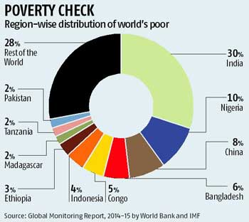

Historic Data Visualisation.
Here is data visualisation presented by "I'm 4 change" that illustrates poverty check all around the world in 2014.

Available at https://www.im4change.org/latest-news-updates/india-home-to-1-in-3-of-the-world039s-poor-in-2011-4674148.html
Kidd states that representation is concerned with the construction of meaning. Analysing the graph above, at first glance it seems like good data visualisaion because the countries are written in bold (images are raley consumed in isolation, (knaflic, chapter 6)) and with the lines connecting the name and a part of the graph.
To start with the lines. They were displayed well because thet are faint and thin compared to the rest of the graph as well as they text. The only serve for connection and do not need to be highlighted because they are not a huge part of the graph.
The different sections of the graph are in different colours so that suggests differences in countries or values without necessarily relying only on text.